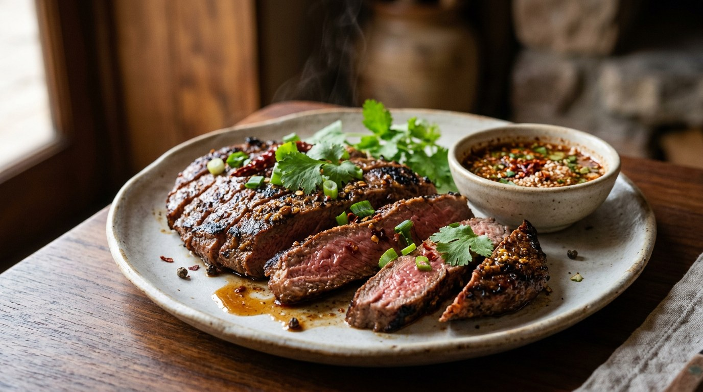

Beef hit with a three-ingredient paste, grilled in a hot pan or over coals, sliced and dragged through jaew — the smoky, sour chilli sauce that makes the meal.

เนื้อย่าง is not one famous recipe so much as a genre: เนื้อ, beef; ย่าง, grilled. At a Thai table it means a piece of beef grilled over charcoal or in a hot pan, sliced into bite-sized pieces, and eaten with น้ำจิ้มแจ่ว — jaew, the dipping sauce of the northeast. Wongnai's recipe page frames it exactly that way: a dish that works as a som tam companion, as drinking food, or as a weekend family grill.
The marinade is the shortest in the Thai canon. Wongnai pounds the สามเกลอ — "the three friends": coriander root, garlic and black pepper — stirs in seasoning sauce and oyster sauce, and gives the beef twenty minutes. That is the whole marinade. The sauce does the rest of the work.
Jaew is the point. Its engine is ข้าวคั่ว, toasted rice — raw glutinous rice dry-roasted in a pan until golden, then pounded to a gritty powder that thickens the sauce and gives it its roasted, nutty depth. TrueID's five-recipe round-up distils the standard version to a 3-2-2 ratio: three parts fish sauce, two parts tamarind water, one part lime, with chilli flakes and that rice powder stirred in last. Pim's food blog builds the thick, market-stall version instead: the sauce is simmered and blended with pickled garlic until it clings to grilled beef skewers in a proper coat. And the minimalist school — celebrity chef Pam, in TrueID's seua rong hai feature — says good beef needs nothing but salt, pepper and fire; the jaew waits on the side.
Kapook's home cook pitches it against the competition directly: bored of Korean barbecue and Japanese yakiniku, she says, try this — marinated, grilled, and dunked in jaew, with hot sticky rice and som tam. That is the Thai answer to tabletop grilling: not a dozen side dishes, but one sauce with roasted rice in it.
| Thai | English | Amount |
|---|---|---|
| เนื้อวัว | Beef | 1 piece |
| พริกไทยดำ | Black peppercorns | 1 tbsp |
| รากผักชี | Coriander roots | 2 roots |
| กระเทียม | Garlic | 2 cloves |
| ซอสปรุงรส | Seasoning sauce | 1½ tbsp |
| น้ำมันหอย | Oyster sauce | 1 tbsp |
| น้ำมันพืช | Vegetable oil | 1 tbsp |
| For the jaew (น้ำจิ้มแจ่ว) | ||
| พริกป่น | Chilli flakes | 2 tbsp |
| น้ำตาลปี๊บ | Palm sugar paste | 1 tbsp |
| ข้าวคั่ว | Toasted rice powder | 1 tbsp |
| มะนาว | Lime juice | 1 tbsp |
| น้ำปลา | Fish sauce | 2 tbsp |
| ผักชี | Coriander, for garnish | to taste |
The Kapook batch (จาก ครัวตุ๊กตา): 2 steaks marinated in 2 tbsp olive oil, 1 tbsp seasoning powder, 1 tsp ground black pepper and 2 tbsp oyster sauce, rested in the fridge at least 1 hour, grilled 7–8 minutes a side over medium heat — charcoal preferred for the aroma; its jaew adds tamarind water and sliced shallots and culantro, with 4 tbsp fish sauce to Wongnai's 2. The pan-grill school (Pantip): lightly marbled beef, just salt (the poster uses pink salt) and a little pepper, grilled slowly over low-medium heat "ใจเย็น ๆ" — patiently. The thick jaew (Pim): ⅔ cup thick tamarind water, 3 tbsp palm sugar, 1 tbsp white sugar, 3 tbsp pickled-garlic brine, 1 tbsp fish sauce and ½ tbsp sea salt, simmered, blended with a whole head of pickled garlic, boiled once more and cooled. The minimalist school (Chef Pam, TrueID): good beef, salt and pepper, fire — nothing else.
The marinade. Wongnai pounds the สามเกลอ and adds seasoning sauce and oyster sauce; Kapook goes olive oil, seasoning powder, oyster sauce and black pepper; Pantip and Chef Pam stop at salt and pepper. Three published schools, from a paste to nothing at all.
The rest. Wongnai marinates for about 20 minutes; Kapook insists on at least an hour in the fridge; the salt-and-pepper school marinates not at all.
The acid in the jaew. Wongnai uses lime juice alone. Kapook and TrueID's base use lime and tamarind water. Pantip and Pim's thick version drop the lime and go all-tamarind — Pim even leans on pickled-garlic brine for extra sourness.
The sweetener. Palm sugar paste in Wongnai and Kapook; plain white sugar in Pantip and TrueID's base; both palm and white sugar in Pim's simmered version.
The texture. Most recipes stir the sauce together cold and serve it spoonable. Pim's thick jaew is simmered, blended with a whole head of pickled garlic, and boiled again so it coats the meat like a glaze.
The fuel. Wongnai and Pantip grill in a pan without apology; Kapook says charcoal first, pan if you must — the aroma is the difference.
The doneness. Kapook sets 7–8 minutes a side over medium heat; Pantip grills low-medium and slow. Every source warns against overcooking, none gives a temperature.
This recipe is translated from the following Thai-language sources. Where they disagree, we've said so.
1. Wongnai — "วิธีทำ 'เนื้อย่างจิ้มแจ่ว' เมนูย่างเนื้อหอมกรุ่น อุ่น ๆ จากเตา" by ปากน้ำเมี่ยน (the recipe used here) — wongnai.com
2. Kapook — "เนื้อย่างจิ้มแจ่ว เมนูเนื้อกลิ่นหอมอร่อยนุ่มกับสูตรน้ำจิ้มแจ่วเนื้อย่างรสเด็ด" (from tukata001, ครัวตุ๊กตา; the charcoal grill and the tamarind jaew) — cooking.kapook.com
3. Pantip — "แจกสูตรเนื้อย่างกระทะ น้ำจิ้มแจ่วรสเด็ด พร้อมวิธีหุงข้าวเหนียวนุ่มนานด้วยหม้อหุงข้าว" (the pan-grill method and the rice-cooker sticky rice) — pantip.com
4. Pim.in.th — "น้ำจิ้มแจ่วแบบข้น" (the thick, simmered jaew for grilled beef skewers) — pim.in.th
5. TrueID Food — "5 สูตรน้ำจิ้มแจ่วรสเด็ด มือใหม่ก็ทำได้ง่ายๆ จิ้มกับอะไรก็อร่อย" (the 3-2-2 base) — food.trueid.net
6. TrueID Food — "วิธีทำ เสือร้องไห้ น้ำจิ้มแจ่วแซ่บ สูตรต้นตำรับไทย ทำเองง่ายๆ ได้ที่บ้าน" by Chef Pam (the salt-and-pepper school) — food.trueid.net